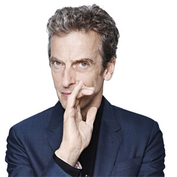

|
Twelfth DoctorPortrayed by Peter Capaldi.The Twelfth Doctor is to be the twelfth incarnation of the protagonist of the long-running BBC television science fiction series Doctor Who. He is to be portrayed by Peter Capaldi[1] following the departure of Matt Smith's incarnation in the 2013 Christmas special.[2] Within the series' narrative, the Doctor is a time travelling, humanoid alien from a race known as the Time Lords. When the Doctor is critically injured, he can regenerate his body but in doing so gains a new physical appearance and with it, a distinct new personality. As such, this plot mechanism has allowed the Doctor to be portrayed by a series of actors over the decades since the series' inception in 1963. Matt Smith, who played the Eleventh Doctor, announced his departure from Doctor Who on 1 June 2013.[5] Prior to the revelation of Capaldi as the next Doctor, there was extensive media speculation on the subject.[6] On 3 August 2013, bookmakers William Hill suspended betting when Capaldi became the five to six favourite to be cast.[7] Capaldi's casting was revealed on 4 August during a live broadcast on BBC One, titled Doctor Who Live: The Next Doctor.[8] The live show was watched by an average of 6.27 million in the UK, and was also simulcast in the United States, Canada and Australia.[9]
|
||||||||||||